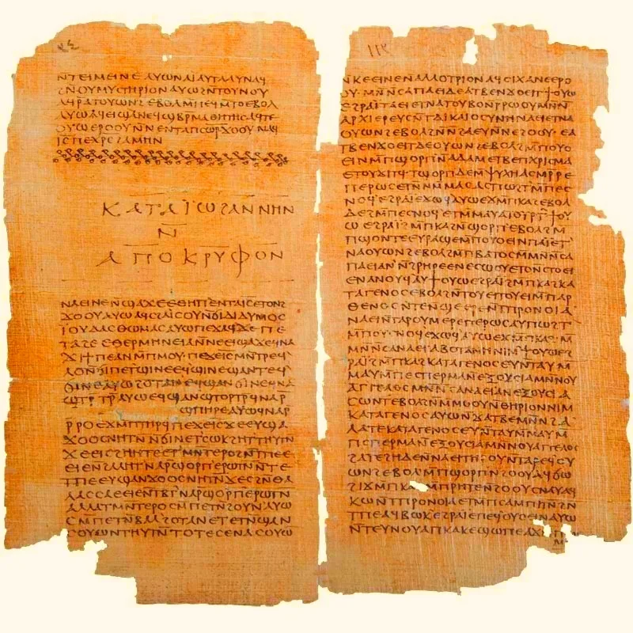

L’Évangile de Thomas. Les 114 paroles examinées.
Une enquête longue sur les manuscrits, les paroles attribuées à Jésus, les traditions concurrentes et ce que l’histoire autorise réellement à dire.

Dans les pages du Codex II, les phrases s’enchaînent sans raconter l’histoire continue de Jésus. Des paraboles familières voisinent avec des images déconcertantes : un lion, cinq arbres du Paradis, des vêtements abandonnés, une lumière présente sous les pierres, Marie face à Pierre. Ce sont des paroles, des mini-dialogues et des énigmes. Certains passages résonnent avec le Nouveau Testament ; d’autres n’y apparaissent pas.
La question historique n’est pas « quel secret faut-il croire ? », mais : quels mots sont attestés, de quelle époque datent les témoins, par quelles étapes ces paroles ont-elles circulé et que permet leur comparaison ? Nous ne possédons ni une cassette de Jésus ni un exemplaire autographe signé par l’apôtre Thomas. Nous avons des manuscrits et une histoire complexe.
La chronologie des témoins
Les dates indiquées ne sont pas toutes de même nature. On distingue la durée de composition supposée, la datation des copies conservées, puis l’histoire de leur découverte et de leur étude moderne.
- Ier–IIIe sièclesFourchette de discussion sur l’histoire de composition et de transmission du recueil : aucun consensus ne permet d’en fixer une année unique.
- IIe–IIIe sièclesDatations proposées des fragments grecs d’Oxyrhynque P.Oxy. 1, 654 et 655, selon les estimations paléographiques des témoins.
- IVe siècleCopie conservée de l’Évangile selon Thomas dans le Codex II de Nag Hammadi, pages 32–51.
- 1897–1903Découverte et publication progressive de papyrus grecs d’Oxyrhynque par Grenfell et Hunt ; leur identification avec Thomas viendra ensuite.
- 1945Découverte de la collection de codices près de Nag Hammadi ; les circonstances exactes du récit traditionnel sont débattues.
- Années 1950Identification et édition des paroles de Thomas à partir du copte et rapprochement avec les fragments grecs connus.
- 2024Paul-Hubert Poirier publie une nouvelle étude critique sur le lieu, la date et la langue originelle du recueil.
Treize chapitres pour comprendre le dossier
La trouvaille qui a changé la question
En décembre 1945, dans la région de Nag Hammadi en Haute-Égypte, la mise au jour d’une collection de codices coptes a transformé la documentation sur les premiers christianismes. Le récit traditionnel de la découverte, avec une jarre et des paysans, s’est imposé dans de nombreux livres. Pourtant, plusieurs historiens ont souligné les difficultés de ce récit transmis après les faits. Un dossier sérieux doit donc distinguer ce qui appartient à la tradition de découverte, ce qui est établi par les objets conservés et ce qui reste controversé.
L’Évangile selon Thomas est le deuxième traité du Codex II. Le témoin copte transmet une collection essentiellement complète de paroles attribuées à Jésus, sans raconter sa naissance, ses miracles, son procès, la crucifixion ou une apparition pascale. Il ne s’agit donc pas d’un autre récit chronologique qui remplacerait les quatre évangiles, mais d’une forme littéraire différente : le recueil de paroles. L’absence de récit de Passion ne signifie pas automatiquement que son auteur ignorait la crucifixion.
L’examen commence par des éléments concrets : support de papyrus, cahiers et reliure du codex, disposition des lignes, titres et divisions modernes. La numérotation habituelle en 114 logia a été proposée par les éditeurs modernes. Le manuscrit ancien n’était pas un ouvrage imprimé découpé en 114 chapitres. Cette distinction intervient dans la lecture de passages qui se suivent et dans la comparaison des témoins.
Quatre témoins matériels, mais pas quatre copies identiques
La base documentaire repose sur la copie copte de Nag Hammadi et trois témoins grecs provenant d’Oxyrhynque : P.Oxy. 1, 654 et 655. Ils sont plus anciens que le codex copte et montrent qu’une version grecque des paroles circulait déjà dans l’Antiquité. Les rapprochements ne sont pas de simples ressemblances de thème : un même enchaînement de paroles et des formulations comparables permettent l’identification.
P.Oxy. 654 correspond au prologue et aux premiers logia ; P.Oxy. 1 conserve une série autour de 26 à 33, avec une phrase rapprochée de 77 ; P.Oxy. 655 transmet notamment du matériel associé à 24 et à 36–39. Le détail exact varie selon l’état matériel, les restitutions et la façon dont les éditeurs comptent les morceaux. Les dates sont des évaluations paléographiques, non des années de composition directement inscrites par les scribes.
La découverte de variantes oblige à poser une question : le texte s’est-il transformé au fil de sa copie, de sa traduction et de ses recompositions ? Les déplacements apparents d’éléments entre 30 et 77 constituent un exemple concret. Un manuscrit n’est pas la photographie intacte des mots du Jésus historique. C’est d’abord le témoin d’une histoire de transmission.
Qui était le Thomas du titre ?
Le prologue met le recueil sous le nom de Didymos Judas Thomas. « Didymos » en grec et « Thomas » en araméen renvoient au thème du jumeau. Dans les traditions chrétiennes syriaques, Judas Thomas est une figure importante. Mais attribuer un écrit à une autorité apostolique était un procédé littéraire répandu. Le nom placé en tête d’un texte ne suffit donc pas à prouver que l’apôtre a écrit personnellement chaque ligne.
Le logion 13 renforce cette autorité par un récit : Pierre et Matthieu répondent à la question de l’identité de Jésus, alors que Thomas reconnaît l’impossibilité d’en parler normalement. Le maître le prend à part et prononce trois paroles que Thomas ne répétera pas. La scène intéresse l’historien parce qu’elle fabrique une légitimité narrative. Ce n’est pas une observation enregistrée par un témoin neutre.
Piste de travail : comparer les noms, les rôles et les discours de Thomas dans l’Évangile selon Jean, les Actes de Thomas et les milieux syriaques. La proximité de motifs n’autorise cependant pas à attribuer automatiquement le recueil à Édesse ni à reconstituer une communauté de façon certaine.
Date et milieu : le débat reste ouvert
Il est tentant d’annoncer que Thomas est le plus ancien évangile ou, à l’inverse, un faux tardif fabriqué après tous les autres. Ces deux formules vont au-delà des preuves. Le Codex II date du IVe siècle ; des fragments grecs attestent des formes du texte plusieurs générations auparavant. La composition et les étapes de rédaction sont une autre question, qui n’a pas reçu de réponse universelle.
Certains chercheurs pensent que des paroles de Thomas conservent des traditions indépendantes et potentiellement anciennes ; d’autres estiment que la rédaction connue s’appuie largement sur les évangiles synoptiques ou sur leurs harmonisations. Une troisième manière de poser le problème suppose plusieurs strates, sans que celles-ci puissent être isolées mécaniquement. Les positions reposent sur les comparaisons lexicales, l’ordre des paroles, les traditions orales et l’histoire des communautés.
L’étude de Paul-Hubert Poirier publiée dans New Testament Studies en 2024 reprend explicitement les questions de lieu, de date et de langue. Cette publication empêche de présenter l’origine syrienne ou toute autre localisation comme une certitude acquise. Dans PARISIS ENGINE, la colonne « établi » doit rester séparée de la colonne « discuté ».
Pourquoi « évangile » si aucune Passion n’y est racontée ?
Dans le christianisme ancien, le mot évangile n’a pas toujours désigné exactement un livre racontant une vie de Jésus selon la structure de Marc, Matthieu, Luc ou Jean. Thomas choisit de rassembler des paroles et de leur donner une efficacité existentielle. La promesse initiale ne concerne pas une chronologie à connaître, mais la compréhension d’un enseignement.
Ce déplacement n’implique pas que l’œuvre ait été « cachée par le Vatican ». Elle est connue aujourd’hui parce que des manuscrits anciens ont été conservés puis retrouvés. Sa non-intégration dans le canon reçu par la plupart des Églises tient à des histoires de transmission, d’autorité et de reconnaissance communautaire ; il n’y a pas de décret unique de suppression de toutes les versions de Thomas dont nous posséderions la preuve.
Parler de « cinquième évangile » peut attirer le lecteur, mais risque de confondre une étiquette médiatique et un statut ecclésial. Ce dossier emploie « évangile de paroles » pour rappeler sa singularité, et « apocryphe » dans un sens descriptif : hors du canon, sans que le mot décide à lui seul de la valeur historique de toutes ses phrases.
Thomas et les quatre évangiles : ressemblances vérifiables
La graine de moutarde, le semeur, la brebis égarée, le banquet, la pierre rejetée, les oiseaux, la lampe, les faux guides : Thomas connaît des motifs dont la parenté avec les évangiles canoniques saute aux yeux. Une enquête ne s’arrête pourtant pas à ces ressemblances. Il faut noter pour chaque parallèle la présence ou l’absence d’un récit introductif, la place du logion, les différences de vocabulaire et la finalité de la parole dans son voisinage.
La parabole des vignerons (65), par exemple, est plus brève dans Thomas que dans certaines versions synoptiques. Cela peut s’expliquer par plusieurs scénarios : abrègement d’une tradition narrative, forme de transmission différente, adaptation à un recueil de paroles. Aucun de ces scénarios ne devient démontré par la seule brièveté. De même, la formule sur César (100) reçoit chez Thomas une troisième composante ; elle oblige à comparer exactement la structure des versions.
Nous proposerons donc des parallèles quand ils sont particulièrement nets, sans fabriquer une équivalence pour chaque logion. Certains aphorismes de Thomas n’ont pas de correspondant canonique direct. Ce mélange d’éléments partagés et de formulations singulières rend l’écrit historiquement précieux.
La connaissance de soi et le Royaume déjà présent
Les logia 3, 51 et 113 forment un ensemble de questions : où trouver le Royaume et pourquoi ne le voit-on pas ? Thomas refuse une localisation simplement céleste ou maritime et dit que le Royaume n’est pas reconnu par ceux qui attendent son apparition. Le temps du salut est rapproché du moment présent. L’enjeu devient la perception, la compréhension et la transformation de l’être humain.
Il serait pourtant trompeur d’en faire exclusivement un manuel de développement personnel. Les formulations parlent du Père vivant, d’une origine spirituelle, de lumière, de filiation et de mort. Elles s’inscrivent dans un horizon religieux antique. Les moderniser à l’excès leur retire ce qui fait justement leur intérêt : elles s’adressent à des lecteurs pour qui monde, ciel, vie et Royaume sont des réalités théologiques.
Les comparaisons avec Luc 17,20-21 et certaines paroles johanniques permettent de voir que la tension entre Royaume présent et Royaume attendu n’est pas limitée à Thomas. La recherche doit confronter les mots et non se contenter d’opposer « religion extérieure » et « spiritualité intérieure ».
Secret, lumière, feu : des images, pas une carte chiffrée
Le prologue parle de paroles cachées, les logia 5 et 6 annoncent que ce qui est voilé sera révélé, tandis que le 33 appelle à proclamer depuis les toits. Cette apparente contradiction n’est pas forcément une erreur. Elle peut traduire une pédagogie selon laquelle l’enseignement réclame d’abord une interprétation, puis peut être partagé. Il peut aussi refléter la réunion de traditions de provenances diverses.
Le feu revient dans les logia 10 et 82 ; la lumière dans les 24, 50, 77 et 83. Les images expriment à la fois une proximité dangereuse, un éclairement et une transformation. Elles ne donnent pourtant pas automatiquement une topographie des sanctuaires ou des nombres cachés. L’image ancienne doit être comparée à ses équivalents bibliques et au vocabulaire grec et copte.
Un vrai travail symbolique consiste à construire un registre : motif, logion, texte parallèle, langue, interprétations publiées, degré de confiance. C’est moins spectaculaire qu’un décodage improvisé, mais beaucoup plus fécond. Les motifs qui se répètent peuvent alors suggérer une cohérence éditoriale, sans démontrer l’existence d’une doctrine unitaire.
Femmes dans Thomas : voix présentes, pouvoir ambigu
Marie prend la parole au logion 21 ; Salomé intervient au 61 ; une femme pétrit du levain au 96 ; une autre porte une jarre au 97. Ces présences obligent à dépasser l’idée d’un texte où les femmes seraient simplement absentes. Mais elles n’impliquent pas non plus une conception égalitaire des sexes au sens contemporain. Les images et les dialogues doivent être examinés selon leur fonction.
Le logion 114 est le cas le plus délicat. Pierre voudrait que Marie quitte le groupe parce qu’elle ne serait pas digne de la vie ; Jésus oppose une réponse où la participation de Marie à la vie est pensée à travers un devenir « masculin ». Il serait faux de nier le langage hiérarchique de l’époque ; il serait tout aussi imprudent de conclure que Jésus historique a nécessairement prononcé ces phrases. Nous possédons ici une rédaction ancienne, pas un enregistrement.
Au logion 22, l’unification du masculin et du féminin ouvre une comparaison interne. Peut-elle éclairer 114 ? Oui, à titre d’hypothèse interprétative. Le texte demeure problématique et plusieurs analyses existent. L’enquête doit conserver les mots difficiles au lieu de réécrire le document pour qu’il corresponde à nos attentes.
Ascèse, monde et corps : pas de doctrine unique
Les logia 27, 42, 56, 80 et 110 parlent du monde comme d’une réalité dont il faut se détacher. Les logia 29, 87 et 112 décrivent des rapports complexes entre l’esprit, l’âme et la chair. On peut y voir des sensibilités ascétiques, mais il serait inexact de produire à partir de quelques images une philosophie parfaitement unifiée.
Le même recueil comporte des exhortations à aimer son frère, à prêter sans intérêt et à agir sans hypocrisie. Thomas associe donc discours sur l’origine spirituelle et gestes relationnels. Certains de ces éléments s’accordent avec les traditions chrétiennes largement diffusées ; d’autres portent un accent singulier.
Il faut également éviter une fausse équivalence : les écrits de Nag Hammadi ne forment pas tous une seule « religion gnostique » homogène. La catégorie même de gnosticisme est discutée dans les études contemporaines. Thomas mérite une analyse propre, fondée sur ses phrases, avant d’être rangé sous une étiquette.
Les cinq passages qui résistent le plus
Le logion 7, celui du lion et de l’humain, demeure une énigme ouverte. Rien ne permet de désigner une seule signification sûre de l’animal. Le logion 19 mentionne cinq arbres du Paradis sans les identifier. Le logion 30 présente des difficultés importantes lorsque l’on compare la version grecque et le copte. Le 74 livre une formule condensée à propos du point d’eau. Le 114 oblige à étudier les catégories anciennes du masculin et du féminin.
La bonne méthode ne consiste pas à trouver à tout prix une explication. Pour chacun de ces passages, l’historien formule les lectures proposées, évalue leurs appuis lexicaux et signale ce qui reste inconnu. Une hypothèse ne peut pas devenir un fait simplement parce qu’elle est séduisante.
Ces difficultés ne diminuent pas l’intérêt du manuscrit. Au contraire, elles indiquent où le travail philologique a le plus de valeur. Les silences d’un texte sont eux aussi des données, à condition de ne pas les remplir sans source.
Premières conclusions : six constats, quatre hypothèses
Constat 1 : un recueil copte de 114 paroles attribuées à Jésus est attesté matériellement. Constat 2 : plusieurs fragments grecs plus anciens conservent des portions comparables. Constat 3 : le recueil ne raconte pas la Passion. Constat 4 : de nombreux logia présentent des parallèles évangéliques. Constat 5 : d’autres paroles demeurent singulières ou difficiles. Constat 6 : les divergences entre témoins interdisent de traiter le texte comme totalement immuable.
Hypothèse A : plusieurs paroles ont circulé indépendamment avant d’être rassemblées. Hypothèse B : un rédacteur a réorganisé des traditions connues dans un ensemble sapientiel. Hypothèse C : des étapes de transmission ont affecté l’ordre de certains énoncés. Hypothèse D : certains rapprochements théologiques peuvent s’expliquer par des milieux partagés, sans qu’un groupe unique soit identifiable.
Aucune de ces hypothèses n’est ici présentée comme découverte exclusive. Le résultat original de cette édition réside dans l’assemblage contrôlé des preuves, des comparaisons et des incertitudes, non dans l’annonce d’un secret prétendument dévoilé.
Ce qu’il reste à examiner, pièce après pièce
Prochaine étape matérielle : confrontations précises des pages 32 à 51 du Codex II avec P.Oxy. 1, 654 et 655. Pour chaque passage présent en grec et en copte, relever les mots correspondants, les lacunes et les déplacements. Le logion 30/77 doit être traité comme une fiche indépendante, avec édition et variantes. Des reproductions consultables et une transcription universitaire sont indiquées dans les sources.
Prochaine étape historique : dresser une chronologie des attestations anciennes du nom de Thomas et des usages des paroles. Il faudra notamment séparer ce que disent les auteurs patristiques de ce que montrent les manuscrits ; une accusation d’hérésie ne constitue pas à elle seule une description fiable de l’œuvre entière.
Prochaine étape comparative : une table synoptique pour les logia 9, 20, 26, 54, 63, 65, 76, 90, 99, 100, 107 et 113. Puis un dossier spécial pour 13, 22 et 114, qui interrogent directement les rôles des disciples et les représentations du genre. Ces trois chantiers pourront prolonger l’enquête sans inventer ce que les archives ne disent pas.
Regarder les manuscrits, pas seulement en parler
Ces images sont des documents, non des reconstitutions esthétiques. Les notices de provenance sont accessibles. Le Codex II porte un texte copte ; les fragments d’Oxyrhynque portent des parties grecques de traditions de Thomas.


Les 114 paroles, une par une
Chaque fiche distingue le contenu rapporté de ce qu’on peut en conclure historiquement. Utilise la recherche pour retrouver un nom, une image ou un thème. Les numéros renvoient à la division éditoriale usuelle.
114 paroles affichées.
L’interprétation et la vie
Contenu de la parole. Le recueil s’ouvre sur la promesse d’une vie qui échappe à la mort pour celui qui comprend les paroles.
Examen historique. Le salut passe ici par l’interprétation. Il ne faut pas transformer cette affirmation théologique en preuve d’immortalité physique.
Chercher jusqu’au bouleversement
Contenu de la parole. La recherche débouche sur une découverte qui trouble, émerveille et transforme celui qui cherche.
Examen historique. La connaissance n’est pas décrite comme une simple accumulation d’informations. Les variantes grecques montrent que l’ordre des effets spirituels n’est pas nécessairement fixe.
Le Royaume intérieur et extérieur
Contenu de la parole. Le Royaume n’est ni exclusivement dans le ciel ni sous la mer : il concerne l’être humain et ce qui l’entoure.
Examen historique. La connaissance de soi est reliée à la filiation divine. Comparer Luc 17,20-21, sans présumer que les deux textes dépendent directement l’un de l’autre.
Le vieillard et le nourrisson
Contenu de la parole. Un vieillard peut apprendre d’un bébé âgé de sept jours le lieu de la vie ; les premiers deviennent derniers.
Examen historique. L’image inverse les hiérarchies de l’âge et de la sagesse. Le chiffre sept peut évoquer la vie à son commencement, mais toute explication numérique exige une preuve.
Voir ce qui est devant soi
Contenu de la parole. Ce qui paraît caché doit finalement apparaître ; il faut d’abord reconnaître ce qui se présente immédiatement.
Examen historique. L’énoncé rejoint un motif de révélation des secrets connu dans les synoptiques. Lire le mot « caché » dans son contexte avant d’y chercher un code ésotérique.
Jeûner, prier et dire vrai
Contenu de la parole. Les disciples interrogent Jésus sur le jeûne, la prière, l’aumône et l’alimentation ; la réponse insiste sur l’absence de mensonge.
Examen historique. Thomas ne fournit pas un règlement rituel complet. L’éthique de la vérité occupe le centre de la réponse, ce qui mérite une comparaison avec Matthieu 6.
Le lion et l’être humain
Contenu de la parole. Une énigme oppose le lion mangé par l’humain et l’humain dévoré par le lion.
Examen historique. Le lion peut figurer une puissance à assimiler ou à dominer, mais le texte ne l’explique pas. Un commentaire rigoureux conserve cette ambiguïté.
Le pêcheur et le grand poisson
Contenu de la parole. Un pêcheur choisit un poisson remarquable et rejette les plus petits.
Examen historique. La scène évoque la sélection d’un bien précieux et peut se rapprocher des paraboles du Royaume. Le sens du tri n’est pas explicitement donné.
La semence et les sols
Contenu de la parole. Des graines tombent sur différents terrains et seule une partie produit une récolte abondante.
Examen historique. Le parallèle avec le semeur des synoptiques est clair, mais les rendements et les détails varient. La question est de savoir ce qui a été transmis, adapté ou réinterprété.
Le feu jeté sur le monde
Contenu de la parole. Jésus dit avoir lancé un feu sur le monde et attendre son embrasement.
Examen historique. Le feu peut évoquer crise, jugement ou transformation. Le rapprochement avec Luc 12,49 est utile mais ne tranche pas le sens exact.
Le ciel qui passe et l’unité perdue
Contenu de la parole. Les cieux disparaîtront ; la parole oppose vivants, morts et passage de l’un au deux.
Examen historique. Ce texte associe horizon cosmique et problème de l’unité humaine. On peut y lire un appel au dépassement de la division sans prétendre retrouver un rite secret.
Jacques le Juste
Contenu de la parole. Interrogé sur l’autorité après le départ de Jésus, le groupe est orienté vers Jacques le Juste.
Examen historique. Le logion est remarquable pour l’histoire des légitimités chrétiennes. Il ne prouve pas, à lui seul, la structure institutionnelle d’une communauté réelle.
Les réponses de Pierre, Matthieu et Thomas
Contenu de la parole. Trois disciples comparent Jésus à des figures connues ; Thomas refuse toute comparaison simple et reçoit des paroles privées.
Examen historique. Le récit construit l’autorité de Thomas par une scène d’intimité. Il faut distinguer cette mise en scène littéraire d’un témoignage oculaire prouvé.
Repas, jeûne et pureté
Contenu de la parole. La parole critique des pratiques religieuses et insiste sur ce qui sort de la bouche plutôt que sur la nourriture.
Examen historique. Elle rejoint des traditions évangéliques sur la pureté, mais radicalise certaines formules. Comparer Marc 7 et Matthieu 15 sans effacer la diversité des variantes.
Celui qui n’est pas né d’une femme
Contenu de la parole. Le texte invite à reconnaître une figure transcendante que la naissance humaine ne définit pas.
Examen historique. L’identité exacte de cette figure reste discutée. La lecture du « Père » doit être articulée avec les autres images du recueil.
La division plutôt que la paix
Contenu de la parole. L’arrivée de Jésus provoque ruptures et conflits jusque dans la maison.
Examen historique. Les parallèles avec Luc 12 et Matthieu 10 sont étroits. Le passage décrit un conflit de fidélités, non un ordre de déclencher la violence.
Ce qu’aucun sens ne connaît
Contenu de la parole. Une réalité inconnue des yeux, des oreilles et du cœur est promise.
Examen historique. Comparer 1 Corinthiens 2,9 et des traditions sapientielles. La proximité lexicale ne permet pas de conclure mécaniquement à un emprunt.
Retrouver le commencement
Contenu de la parole. À la question de la fin, Jésus renvoie au commencement.
Examen historique. La fin et l’origine se répondent. L’intérêt du logion est de déplacer une attente chronologique vers la question de l’existence.
Les cinq arbres du Paradis
Contenu de la parole. Cinq arbres demeurent immuables et leur connaissance est associée à la vie.
Examen historique. Aucun inventaire certain de ces arbres n’est donné. Les systèmes symboliques proposés plus tard doivent être identifiés comme hypothèses.
La graine de moutarde
Contenu de la parole. Le Royaume ressemble à une graine minuscule qui devient un abri pour les oiseaux.
Examen historique. Un parallèle canonique très net. Les différences de vocabulaire importent autant que la ressemblance du motif.
Les enfants dans le champ
Contenu de la parole. Marie demande à quoi ressemblent les disciples ; une image de champ provisoirement occupé est suivie d’avertissements.
Examen historique. Le logion juxtapose des scènes et consignes. Il faut respecter sa composition composite plutôt que lui imposer une morale unique.
Faire des deux un
Contenu de la parole. Des nourrissons servent d’exemple et les oppositions dedans/dehors, haut/bas, masculin/féminin sont appelées à l’unification.
Examen historique. Passage central pour comprendre l’idéal d’unité de Thomas. La formule sur les sexes doit être contextualisée, non projetée telle quelle sur les identités contemporaines.
Quelques élus dans la multitude
Contenu de la parole. Un petit nombre est choisi parmi beaucoup et se tient dans l’unité.
Examen historique. L’imagerie de sélection peut refléter une spiritualité de minorité. On ne peut en déduire des effectifs historiques.
La lumière dans la personne lumineuse
Contenu de la parole. Les disciples interrogent le lieu où trouver Jésus ; la réponse décrit la lumière qui rayonne de l’être lumineux.
Examen historique. Lumière intérieure et manifestation extérieure se rejoignent. Comparer Jean 1 et 8, sans réduire Thomas à Jean.
Aimer son frère
Contenu de la parole. Le frère doit être aimé et protégé comme ce que l’on possède de plus précieux.
Examen historique. Cette injonction tempère l’idée que Thomas ne parlerait que d’une expérience intérieure individuelle. Elle donne un contenu relationnel à la sagesse.
La paille et la poutre
Contenu de la parole. Avant de corriger son frère, chacun doit voir l’obstacle énorme qui aveugle son propre regard.
Examen historique. Le parallèle avec Matthieu 7 et Luc 6 est évident. La critique de l’hypocrisie traverse plusieurs traditions.
Jeûner du monde
Contenu de la parole. Trouver le Royaume demande un détachement du monde et une compréhension du sabbat.
Examen historique. Il ne suffit pas d’assimiler « monde » à toute vie matérielle. Les textes anciens emploient le terme dans des sens variés.
Des êtres humains ivres
Contenu de la parole. Jésus dit rencontrer un monde grisé, qui ne perçoit ni son manque ni sa soif.
Examen historique. L’ivresse est une métaphore de l’aveuglement. L’interprétation ne doit pas devenir une condamnation littérale des personnes.
L’esprit et la chair
Contenu de la parole. Le rapport entre esprit et corps est présenté comme un paradoxe : une grande richesse demeure dans la pauvreté.
Examen historique. La tonalité anthropologique est nette mais ne prouve pas une doctrine dualiste entièrement élaborée. Les mots doivent être lus selon la traduction copte.
Un, deux, trois et la présence
Contenu de la parole. Une courte formule énigmatique associe nombre de figures et présence de Jésus.
Examen historique. Le texte grec et la version copte n’organisent pas toutes les phrases de la même manière. C’est un dossier prioritaire de critique textuelle.
Le prophète méconnu chez lui
Contenu de la parole. Le prophète n’est pas reçu dans son village et le médecin n’y soigne pas ceux qui le connaissent.
Examen historique. La tradition est également attestée dans les évangiles narratifs. Elle suggère des paroles circulant dans plusieurs cadres.
La ville sur une hauteur
Contenu de la parole. Une cité établie sur une montagne ne peut rester cachée.
Examen historique. L’image d’une visibilité impossible à dissimuler rappelle Matthieu 5,14. Elle peut concerner l’enseignement, la communauté ou le Royaume.
La parole proclamée sur les toits
Contenu de la parole. Un enseignement reçu discrètement doit devenir public ; la lampe doit éclairer.
Examen historique. Le paradoxe est important : un recueil de « paroles cachées » commande aussi la transmission ouverte. La tension mérite mieux qu’une lecture conspirationniste.
L’aveugle guidant l’aveugle
Contenu de la parole. Deux personnes sans vue tombent ensemble lorsqu’une prétend conduire l’autre.
Examen historique. La critique vise les guides incapables de discerner. Comparer Matthieu 15 et Luc 6.
Le maître de maison ligoté
Contenu de la parole. Un homme fort ne peut être dépouillé tant qu’il n’a pas été neutralisé.
Examen historique. L’image est rude et partagée avec les synoptiques. Le contexte de polémique sur la puissance importe plus qu’une interprétation criminelle littérale.
L’inquiétude des vêtements
Contenu de la parole. La parole demande de ne pas être consumé par la question de l’habit.
Examen historique. La proximité avec Matthieu 6 et Luc 12 invite à comparer les témoins grecs d’Oxyrhynque pour les variantes.
Se dévêtir sans honte
Contenu de la parole. Les disciples verront le Vivant lorsqu’ils auront abandonné leurs vêtements sans honte, comme des enfants.
Examen historique. Le vêtement peut désigner des identités, des apparences ou des états de l’être. Aucun rite de nudité historique n’est démontré par ce seul texte.
La parole devenue introuvable
Contenu de la parole. Un temps viendra où les disciples chercheront Jésus sans le trouver.
Examen historique. La parole met en scène la perte d’accès au maître. Elle renforce l’urgence d’écouter pendant qu’il parle.
Les clés de la connaissance
Contenu de la parole. Des spécialistes religieux cachent les clés et barrent l’accès ; il faut être rusé et innocent.
Examen historique. La critique des autorités rejoint Luc 11,52 et Matthieu 23. Elle ne démontre pas l’existence d’une suppression concertée de livres.
La vigne étrangère au Père
Contenu de la parole. Une vigne plantée loin du Père n’a pas de racine durable.
Examen historique. La métaphore de l’enracinement invite à réfléchir aux appartenances. Le vocabulaire végétal peut rejoindre plusieurs traditions bibliques.
Recevoir davantage ou perdre
Contenu de la parole. Celui qui possède reçoit encore ; celui qui est dépourvu perd jusqu’au peu qu’il a.
Examen historique. L’énoncé rappelle la parabole des talents et invite à distinguer richesse spirituelle et fortune matérielle.
Être de passage
Contenu de la parole. Une formule très brève invite à devenir des passants.
Examen historique. L’absence de contexte laisse ouverte l’étendue du détachement : pèlerinage, précarité, renoncement ou liberté intérieure.
L’arbre et son fruit
Contenu de la parole. La reconnaissance du maître est comparée au jugement contradictoire porté sur l’arbre et le fruit.
Examen historique. L’unité entre origine et manifestation est au cœur de la réplique. Elle interroge la cohérence de ceux qui écoutent.
Le blasphème contre l’Esprit
Contenu de la parole. Le pardon est évoqué pour plusieurs paroles blasphématoires, sauf contre l’Esprit.
Examen historique. Parallèles directs avec Marc 3, Matthieu 12 et Luc 12. Les interprétations confessionnelles dépassent le seul constat philologique.
Épines, figues et paroles
Contenu de la parole. Une plante produit selon sa nature ; de même le cœur humain fait sortir ce qui le remplit.
Examen historique. La qualité du langage devient un indice de l’intériorité. Comparer Luc 6,43-45.
Jean Baptiste et le petit enfant
Contenu de la parole. Jean est présenté comme exceptionnel parmi les êtres nés des femmes, mais l’enfance symbolique lui est comparée.
Examen historique. On retrouve les enjeux du classement des prophètes et de l’inversion des grandeurs. Matthieu 11 et Luc 7 sont essentiels.
Deux maîtres et les outres
Contenu de la parole. Le texte aligne les incompatibilités : deux maîtres, vins et récipients nouveaux ou anciens.
Examen historique. La juxtaposition d’images peut porter sur la fidélité et la nouveauté. Ne pas y plaquer une rupture totale entre judaïsme et christianisme.
Deux êtres réconciliés
Contenu de la parole. L’accord de deux personnes devient assez puissant pour déplacer une montagne.
Examen historique. L’hyperbole de la montagne exprime une transformation radicale. Elle est à rapprocher de Matthieu 17,20 et 18,19.
Heureux les solitaires
Contenu de la parole. Le texte bénit les personnes seules ou unifiées, rappelant qu’elles viennent du Royaume et y retournent.
Examen historique. Le terme peut concerner l’unicité spirituelle autant que la solitude sociale. Une traduction trop vite monastique serait anachronique.
Venir de la lumière
Contenu de la parole. À ceux qui les interrogent, les disciples doivent dire qu’ils viennent de la lumière, et évoquer mouvement et repos.
Examen historique. La formulation est proche des discours sur l’origine spirituelle. Il reste difficile de la relier à une communauté identifiée.
Le monde nouveau déjà présent
Contenu de la parole. Ce que les disciples attendent pour la fin est présenté comme déjà arrivé sans qu’ils le sachent.
Examen historique. L’eschatologie devient une question de perception du présent. Comparer Luc 17 et les attentes de résurrection.
Les vingt-quatre prophètes
Contenu de la parole. Les disciples évoquent les prophètes d’Israël ; Jésus leur reproche de délaisser le Vivant présent.
Examen historique. Le nombre vingt-quatre peut être une manière de désigner les Écritures prophétiques. Son référent précis exige prudence.
La circoncision véritable
Contenu de la parole. Le rite corporel est opposé à une circoncision de l’esprit.
Examen historique. La distinction rappelle Paul et certaines formulations prophétiques. Elle doit être analysée historiquement sans caricaturer la pratique juive.
La béatitude des pauvres
Contenu de la parole. Le Royaume est annoncé aux pauvres.
Examen historique. Comparer Luc 6,20 et Matthieu 5,3. La différence entre pauvreté matérielle et spirituelle demeure fondamentale.
Rompre les fidélités familiales
Contenu de la parole. Suivre Jésus exige de placer le discipulat avant les proches et de porter sa croix.
Examen historique. Les mots sont volontairement choquants. Une étude doit distinguer rhétorique de rupture et injonction littérale de haine.
Le monde comme cadavre
Contenu de la parole. Celui qui comprend le monde le compare à un corps sans vie.
Examen historique. L’image est radicale et difficile. Ce n’est pas une preuve que tous les disciples de Thomas rejetaient la matière de façon homogène.
Le blé et l’ivraie
Contenu de la parole. Un ennemi mêle une mauvaise herbe au bon grain ; le tri attend la récolte.
Examen historique. Comparer Matthieu 13. La parabole déconseille une séparation prématurée qui détruirait aussi ce qui est bon.
La fatigue et la vie
Contenu de la parole. Est déclaré heureux celui qui a peiné et trouvé la vie.
Examen historique. L’effort de recherche réapparaît. Il ne s’agit pas forcément de valoriser la souffrance pour elle-même.
Voir le Vivant pendant la vie
Contenu de la parole. Il faut saisir maintenant la possibilité de voir le Vivant, car après la mort elle peut manquer.
Examen historique. La parole dramatise l’urgence de l’existence. Il serait abusif d’en tirer une doctrine complète de l’au-delà.
Le Samaritain et l’agneau
Contenu de la parole. Une scène de transport d’un agneau mortel sert à exhorter à chercher le repos et à éviter de devenir nourriture.
Examen historique. La présence du Samaritain ne suffit pas à identifier la parabole du bon Samaritain. Ici les rôles et la finalité diffèrent.
Salomé et l’être indivisé
Contenu de la parole. Une parole évoque deux personnes sur une couche, puis Salomé interroge Jésus sur son identité ; il parle de l’indivision.
Examen historique. Salomé n’est pas simplement un nom décoratif : elle prend la parole. Mais le texte ne livre pas sa biographie.
Mystères et discrétion
Contenu de la parole. Des mystères sont confiés à ceux qui peuvent les recevoir ; la main gauche ignore l’action de la droite.
Examen historique. Le secret apparaît comme pédagogie différenciée, non comme preuve d’une organisation cachée moderne.
Le riche qui meurt la nuit
Contenu de la parole. Un homme prépare ses investissements et ses réserves, puis sa vie prend fin soudainement.
Examen historique. Le parallèle avec Luc 12,16-21 met en question les illusions de maîtrise permises par la richesse.
Les invités trop occupés
Contenu de la parole. Plusieurs convives refusent un banquet à cause d’affaires personnelles ; d’autres sont invités.
Examen historique. Comparer Matthieu 22 et Luc 14. Chez Thomas l’opposition aux acheteurs et marchands est plus marquée.
Les vignerons violents
Contenu de la parole. Des exploitants frappent les serviteurs envoyés par le propriétaire et tuent son fils.
Examen historique. Un exemple majeur pour l’étude des relations avec les synoptiques. La version de Thomas omet certains développements allégoriques.
La pierre rejetée
Contenu de la parole. La pierre écartée par les constructeurs devient la pierre essentielle.
Examen historique. Écho au Psaume 118 et aux usages néotestamentaires. Ce n’est pas un indice archéologique d’une pierre précise.
Tout connaître sauf soi-même
Contenu de la parole. Un savoir immense demeure inutile si l’on s’ignore soi-même.
Examen historique. L’aphorisme condense le thème de la connaissance intérieure. Il rejoint le logion 3 et prépare le 70.
Heureux les persécutés
Contenu de la parole. La persécution et la haine subies donnent lieu à une bénédiction paradoxale.
Examen historique. Comme dans Matthieu 5, la parole parle d’épreuves sociales. Elle doit être lue sans encourager la recherche volontaire de persécution.
La faim et la persécution du cœur
Contenu de la parole. Deux bénédictions évoquent ceux qui souffrent intérieurement et ceux qui ont faim.
Examen historique. L’association du manque et de la proximité divine complexifie la conception du bonheur chez Thomas.
Ce qui sort de l’intérieur
Contenu de la parole. Mettre au jour ce qui se trouve en soi peut sauver ; le laisser enfoui peut conduire à la perte.
Examen historique. L’image est puissante, mais il serait abusif d’en faire à elle seule une théorie psychologique moderne.
Détruire cette maison
Contenu de la parole. Une courte annonce promet la destruction d’une maison et l’impossibilité de la rebâtir.
Examen historique. Certains rapprochent ce logion des paroles sur le Temple. Le texte ne désigne pas explicitement le bâtiment : statut hypothétique.
Le partage d’héritage refusé
Contenu de la parole. Un homme demande une intervention sur son héritage ; Jésus refuse le rôle d’arbitre du partage.
Examen historique. Le parallèle avec Luc 12,13-14 permet d’étudier comment les récits encadrent une même réponse.
La moisson et les ouvriers
Contenu de la parole. La récolte est grande mais manque de travailleurs ; il faut demander qu’ils soient envoyés.
Examen historique. Même image que dans Matthieu 9 et Luc 10. Elle invite à travailler sur la transmission de formules de mission.
La citerne vide
Contenu de la parole. Une parole obscure montre une foule autour d’un point d’eau mais l’absence de ce qu’elle est venue chercher.
Examen historique. Une lacune ou une formulation difficile rend l’explication incertaine. La tentation d’inventer une clé doit être retenue.
La porte et la chambre nuptiale
Contenu de la parole. La multitude attend à l’entrée tandis que les êtres « seuls » accèdent à la chambre nuptiale.
Examen historique. La chambre peut être métaphore d’union spirituelle. Les liens avec le vocabulaire valentinien se discutent sans certitude d’appartenance.
La perle d’un prix incomparable
Contenu de la parole. Un marchand vend ses biens pour acquérir une perle unique ; un trésor incorruptible est recherché.
Examen historique. Le parallèle avec Matthieu 13 est frappant. Le contraste entre ce qui se vend et ce qui demeure structure l’image.
La lumière dans le bois et la pierre
Contenu de la parole. Le Vivant se décrit comme lumière et totalité ; sa présence est évoquée sous le bois et la pierre.
Examen historique. La comparaison grecque est cruciale : une portion apparaît ailleurs dans P.Oxy. 1. Ce déplacement interdit de présumer une séquence immuable.
Pourquoi aller au désert ?
Contenu de la parole. La foule est interrogée sur ce qu’elle cherchait : un roseau instable ou un homme richement vêtu ?
Examen historique. Le rapprochement avec le discours sur Jean Baptiste des synoptiques suggère un matériau traditionnel partagé.
Le ventre qui a porté Jésus
Contenu de la parole. À une femme qui loue sa mère, Jésus répond en privilégiant l’écoute de la parole.
Examen historique. Comparer Luc 11,27-28. La formule sur la maternité et les jours à venir mérite sa propre analyse.
Connaître le corps du monde
Contenu de la parole. Une formule apparentée au logion 56 associe connaissance du monde et découverte du corps.
Examen historique. Les doubles formulations dans une même collection sont des indices utiles pour étudier la composition et les variantes.
Richesse et renoncement au pouvoir
Contenu de la parole. La parole évoque le riche qui règne et le puissant qui se détache de son pouvoir.
Examen historique. Le contraste résiste à une morale économique univoque. Son sens dépend du vocabulaire exact et de la place des mots.
Le feu de la proximité
Contenu de la parole. Être proche de Jésus signifie être proche du feu ; s’en éloigner revient à s’éloigner du Royaume.
Examen historique. Feu et proximité sont associés dans un très court aphorisme. Le parallèle avec 10 renforce le motif de la transformation.
Images et lumière dissimulée
Contenu de la parole. Les images se voient, mais la lumière qui les traverse demeure cachée.
Examen historique. Ce passage suppose un rapport entre visibilité et invisible, sans livrer une théorie complète des images sacrées.
Les images antérieures à soi
Contenu de la parole. L’être humain se réjouit de son image présente mais tremble devant des images d’un autre ordre, antérieures à lui.
Examen historique. Il est possible d’entendre une réflexion sur l’origine spirituelle. La traduction et le contexte restent délicats.
Adam et la mort
Contenu de la parole. Adam est présenté comme issu d’une grandeur considérable mais insuffisante pour échapper à la mort.
Examen historique. Le contraste avec la Genèse et Paul doit être précis. Ce logion ne prouve pas une doctrine unique d’Adam dans tout le christianisme ancien.
N’avoir où reposer sa tête
Contenu de la parole. Les animaux ont leur abri, mais le Fils de l’homme n’a pas de lieu où se reposer.
Examen historique. Parallèles avec Matthieu 8 et Luc 9. La formule situe la condition du disciple et du maître dans la précarité.
Corps dépendant d’un corps
Contenu de la parole. La dépendance entre corps et âme est décrite en termes douloureux.
Examen historique. Le lexique anthropologique est complexe. Éviter d’y projeter automatiquement le dualisme cartésien ou une condamnation de la sexualité.
Messagers et prophètes
Contenu de la parole. Les visiteurs annoncés apportent ce qui est déjà donné, et la réciprocité est interrogée.
Examen historique. L’oracle est dense et son référent incertain. Le commentaire doit signaler ce qui n’est pas identifiable.
L’intérieur de la coupe
Contenu de la parole. À quoi bon nettoyer l’extérieur alors que le créateur est à l’origine de l’intérieur et de l’extérieur ?
Examen historique. Comparer Luc 11 et Matthieu 23. La parole milite pour une cohérence du dedans et du dehors.
Un joug qui apporte le repos
Contenu de la parole. Jésus invite à venir vers lui pour trouver un repos sous un joug léger.
Examen historique. Écho particulièrement proche à Matthieu 11,28-30. On doit comparer mot à mot avant toute théorie de priorité.
Lire le moment présent
Contenu de la parole. Ceux qui demandent une preuve de l’identité de Jésus savent observer le temps mais non ce qui est sous leurs yeux.
Examen historique. La critique porte sur l’incapacité à reconnaître le présent. Le motif rejoint Matthieu 16 et Luc 12.
La recherche négligée
Contenu de la parole. Le maître dit être disposé à expliquer ce qu’on lui demandait auparavant, mais ses auditeurs ne le cherchent plus.
Examen historique. La parole crée une tension entre désir de savoir et capacité d’attention. Elle renvoie aux logia 1 et 2.
Les perles et les animaux
Contenu de la parole. Les choses précieuses ne doivent pas être jetées là où elles seraient foulées aux pieds.
Examen historique. Écho à Matthieu 7,6. La formulation polémique appartient à la rhétorique antique et n’autorise pas le mépris de personnes réelles.
Frapper et chercher
Contenu de la parole. Celui qui cherche trouve ; à celui qui frappe une porte s’ouvre.
Examen historique. C’est un noyau sapientiel très diffusé. Les différences de contexte entre Thomas et Matthieu 7 comptent.
Prêter sans intérêt
Contenu de la parole. À ceux qui possèdent de l’argent, la parole recommande de donner à qui ne pourra pas rendre.
Examen historique. Le rapport entre richesse et don prend ici une forme très concrète. Comparer Luc 6,34-35.
Le levain et la femme
Contenu de la parole. Une femme cache un peu de levain dans une masse de pâte qui finit par lever.
Examen historique. Même image que Matthieu 13,33 et Luc 13,20-21. Elle donne un rôle positif à une activité quotidienne féminine.
La cruche percée
Contenu de la parole. Une femme transporte une jarre dont le contenu s’échappe sans qu’elle s’en aperçoive ; l’objet est vide à l’arrivée.
Examen historique. Cette parabole n’a pas de parallèle canonique exact. Sa signification fait débat : ignorance, perte, vacuité ou paradoxe du Royaume.
L’homme et son épée
Contenu de la parole. Un homme teste son arme avant de s’en servir contre un personnage puissant.
Examen historique. La violence du récit choque et ne doit pas être transformée en recommandation pratique. Le rapport avec le Royaume exige de distinguer image et action prescrite.
La vraie parenté de Jésus
Contenu de la parole. Ceux qui accomplissent la volonté du Père sont désignés comme la famille du maître.
Examen historique. Parallèles avec Marc 3, Matthieu 12 et Luc 8. La parenté spirituelle redéfinit sans effacer l’existence de la famille réelle.
À César, à Dieu et à Jésus
Contenu de la parole. Une pièce d’argent mène à distinguer ce qui revient à César, à Dieu et au maître.
Examen historique. Thomas ajoute un membre à la formule connue des synoptiques. Cette troisième partie est un indice textuel majeur.
La mère terrestre et la vraie mère
Contenu de la parole. Le logion juxtapose des formules contrastées sur l’amour et la haine de la famille, puis évoque une mère qui donne la vie.
Examen historique. La lecture du passage demande prudence : des lacunes et les référents de « mère » ont suscité diverses interprétations.
Le chien dans la mangeoire
Contenu de la parole. Des responsables religieux sont comparés à un chien qui ne mange pas et empêche les animaux de se nourrir.
Examen historique. Le ton polémique est violent ; il reflète des conflits discursifs anciens. Ce n’est pas une description neutre du judaïsme.
Anticiper les voleurs
Contenu de la parole. La personne qui sait où les voleurs entreront peut se préparer avant leur arrivée.
Examen historique. La vigilance constitue le sens le plus immédiat. On peut comparer Matthieu 24 et Luc 12.
Le jeûne et l’époux
Contenu de la parole. Interrogé sur la prière et le jeûne, Jésus renvoie au moment où l’époux aura quitté la chambre nuptiale.
Examen historique. Parallèles avec Marc 2, Matthieu 9 et Luc 5. La métaphore nuptiale relie rituel et absence du maître.
Connaître père et mère
Contenu de la parole. La parole présente une qualification insultante ou paradoxale pour celui qui connaît ses parents.
Examen historique. Sans contexte narratif, il serait imprudent de produire une lecture sexuelle affirmative ou d’en déduire une accusation historique.
Unifier et déplacer la montagne
Contenu de la parole. L’union des deux en un est reliée au pouvoir symbolique de déplacer une montagne.
Examen historique. Le logion relie 22 et 48. La répétition de motifs peut indiquer une activité de compilation et de recomposition.
La brebis la plus grande
Contenu de la parole. Un berger abandonne momentanément les autres brebis pour retrouver une brebis remarquable et lui déclare sa préférence.
Examen historique. Comparer Matthieu 18 et Luc 15. La version de Thomas valorise le caractère singulier de la brebis.
Boire à la bouche du maître
Contenu de la parole. Celui qui reçoit ce que donne Jésus devient semblable à lui et accède au caché.
Examen historique. L’image de transmission rappelle l’enseignement oral et la participation à la vie. Elle ne décrit aucun geste rituel attesté en dehors du texte.
Le trésor ignoré dans le champ
Contenu de la parole. Un trésor demeure méconnu de plusieurs propriétaires avant d’être découvert par un acquéreur.
Examen historique. La parabole ressemble à Matthieu 13 mais développe une histoire distincte. Le détail final sur le prêt d’argent reste frappant.
Trouver le monde et y renoncer
Contenu de la parole. La réussite matérielle est opposée à un renoncement radical.
Examen historique. Il s’agit d’un thème ascétique récurrent, à rapprocher de 56 et 80. Sa portée sociale ne se laisse pas déduire du seul logion.
La disparition du ciel et de la terre
Contenu de la parole. Le cosmos s’efface devant celui qui tient sa vie du Vivant.
Examen historique. Une rhétorique apocalyptique s’unit à la connaissance de soi. Il faut éviter d’interpréter littéralement des prédictions calendaires absentes du texte.
Chair et âme prisonnières l’une de l’autre
Contenu de la parole. Une plainte réciproque vise la dépendance de la chair et de l’âme.
Examen historique. La forme parallèle rappelle le logion 87. Elle ouvre un débat sur la condition humaine plutôt qu’un programme métaphysique détaillé.
Un Royaume déjà répandu
Contenu de la parole. Les disciples demandent quand le Royaume viendra ; il est décrit comme répandu sur terre mais non perçu.
Examen historique. Ce logion répond directement au 3 et au 51. L’enjeu est l’aveuglement présent plus que le calcul de la fin du monde.
Pierre, Marie et le devenir masculin
Contenu de la parole. Pierre juge Marie indigne d’accéder à la vie ; Jésus affirme qu’il la guidera pour qu’elle devienne un esprit vivant en employant un langage masculin.
Examen historique. La réponse contredit l’exclusion formulée par Pierre, mais le vocabulaire reste profondément marqué par les hiérarchies de genre antiques. Plusieurs lectures académiques rivalisent ; on ne peut effacer ce problème par une formule rassurante.
Douze parallèles et cinq nœuds d’incertitude
Parallèles à confronter mot à mot : Thomas 9 / Marc 4 et parallèles ; 20 / Marc 4,30-32 ; 26 / Matthieu 7,3-5 ; 54 / Luc 6,20 ; 63 / Luc 12,16-21 ; 65 / Marc 12,1-12 ; 76 / Matthieu 13,45-46 ; 90 / Matthieu 11,28-30 ; 99 / Marc 3,31-35 ; 100 / Marc 12,13-17 ; 107 / Luc 15,3-7 ; 113 / Luc 17,20-21.
Passages exigeant des fiches philologiques séparées : Thomas 7 (lion), 19 (cinq arbres), 30/77 (variantes grecques et coptes), 74 (puits) et 114 (Marie et Pierre).
Ces rapprochements sont des pistes explicites de travail. Un parallèle démontre une parenté littéraire ou traditionnelle, pas automatiquement la direction d’un emprunt.
Comment classer ce que nous savons
L’existence du Codex II, sa copie copte, sa place dans la collection, la présence des trois papyrus grecs et des ressemblances textuelles avec des paroles du Nouveau Testament.
Le grec comme langue de rédaction première, les milieux de composition, les datations précises des diverses couches et le degré de dépendance envers les synoptiques.
La portée théologique des formules d’unification, des images de lumière, de la chambre nuptiale, du corps et du monde. Plusieurs lectures peuvent être compatibles avec un texte court.
La rédaction autographe par l’apôtre, une suppression unique organisée à date certaine, une doctrine secrète uniforme, un code numérique historique ou une preuve de paroles exactes de Jésus pour chaque logion.
Les sources que tu peux ouvrir et vérifier
Chaque source remplit une fonction différente : manuscrit, transcription, synthèse scientifique, article de recherche ou outil de lecture. Les sources modernes ne deviennent pas des documents du Ier siècle parce qu’elles commentent des textes anciens.
Transcription et annotation scientifique du copte ; vérifier les lacunes.
Ouvrir la source vérifiable ↗Notice académique, témoins manuscrits, bibliographie et débats.
Ouvrir la source vérifiable ↗Article scientifique sur lieu, date et langue d’origine.
Ouvrir la source vérifiable ↗Traduction déposée dans le domaine public par son traducteur ; contrôle des 114 passages.
Ouvrir la source vérifiable ↗Liens vers les feuillets coptes et les papyrus grecs.
Ouvrir la source vérifiable ↗Présentation et comparaisons ; à confronter avec les éditions critiques.
Ouvrir la source vérifiable ↗Histoire de l’identification et de l’édition critique.
Ouvrir la source vérifiable ↗Photographie du manuscrit, reproduction ancienne dans le domaine public.
Ouvrir la source vérifiable ↗Témoin matériel complémentaire, illustration documentée.
Ouvrir la source vérifiable ↗Bibliographie complémentaire : A. Guillaumont et al., The Gospel according to Thomas (1959) ; B. Layton (dir.), Nag Hammadi Codex II, 2–7 (1989) ; B. Ehrman et Z. Pleše, The Apocryphal Gospels (2011). Les références ne signifient pas que tous ces volumes ont été collationnés page par page dans cette version.
Le texte ne nous livre pas un secret unique. Il nous donne une enquête.
Ce manuscrit est précieux parce qu’il montre des manières anciennes de recueillir et comprendre des paroles attribuées à Jésus. Les 114 logia ne se réduisent ni à une orthodoxie déguisée ni à la preuve d’une Église cachée. Ils témoignent d’une pluralité de formes littéraires, de mémoire religieuse et d’expériences de lecture.
Le chantier reste ouvert sur les variantes grecques, les contextes syriaques proposés, l’articulation avec les synoptiques et les figures de Jacques, Thomas, Marie et Salomé. Une enquête approfondie n’a pas pour mission de tout expliquer au forceps ; elle doit savoir montrer exactement où l’archive cesse de parler.
Prochaine édition envisagée : confrontation bilingue des logia 1–7, 26–33, 36–39 et 77, puis dossier indépendant sur 22 et 114. Cette phase exigera une collation philologique réellement menée, non simplement annoncée.
↑ Retour au début · Retour à PARISIS ENGINE · Foi & spiritualité